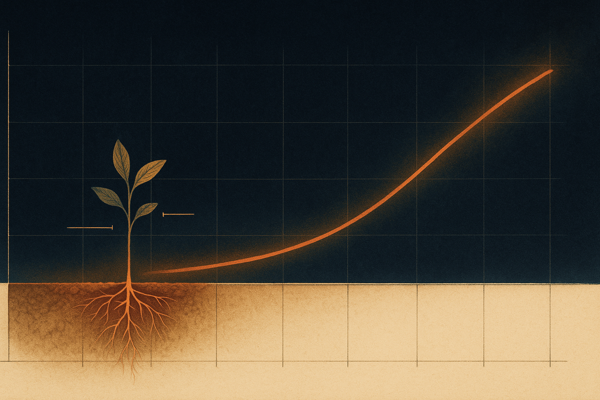
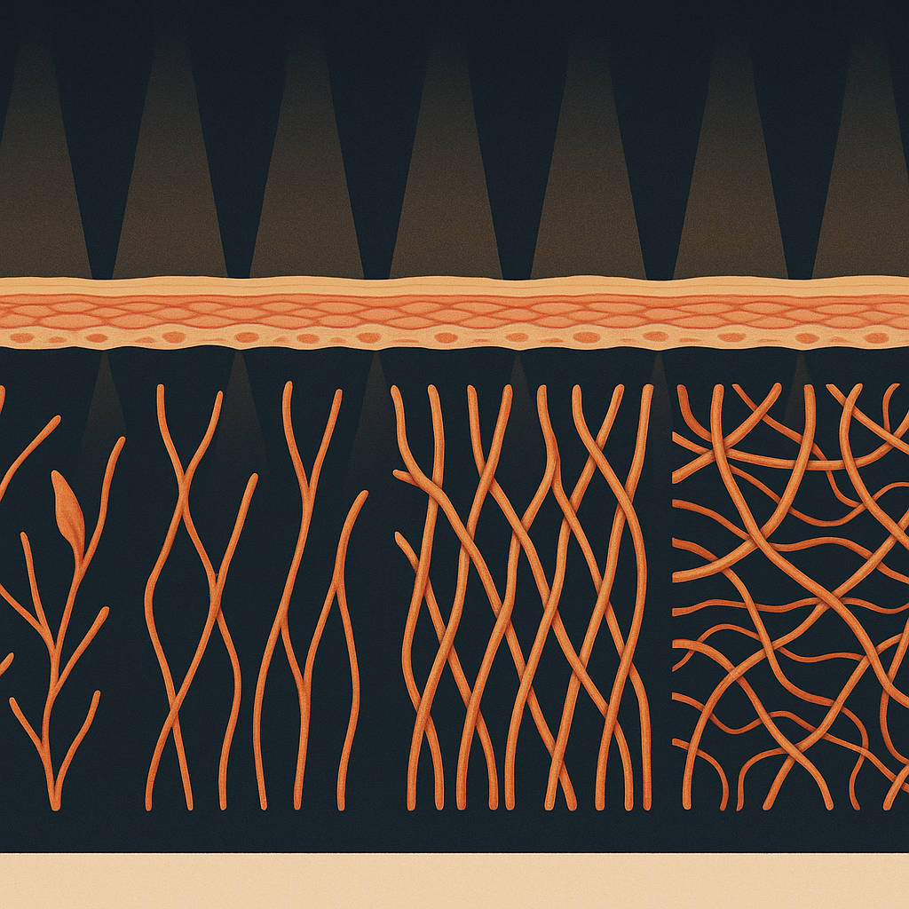
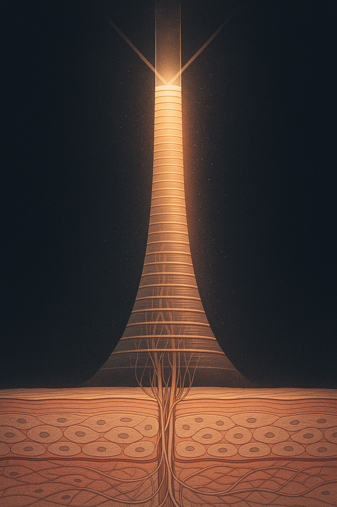

Review below. Reply approve to publish the Facebook post, or tell me edits.

Most LED masks are sold on a fantasy of days. "Erase wrinkles in a week." "See results overnight." If that has ever made you roll your eyes, good. That instinct is healthy, and it is also correct. Real photobiomodulation, the mechanism behind LED skincare, is slow, modest and cumulative. It works more like flossing than like a facelift.
So before you spend a cent, here is the honest calendar. Bookmark this, screenshot it, hold any brand to it, including ours. You will want it around week three, when nothing seems to be happening and it feels like the mask has stopped working. More on that at the end.
No. And any brand promising you a day-seven miracle is selling marketing, not science.
Photobiomodulation means certain wavelengths of visible light can gently nudge skin cells toward doing their normal work a little more efficiently. That nudge is real, but it is small per session. What matters is the accumulated dose over weeks, delivered consistently. There is no version of the biology where one glowing evening rewrites your skin. If you go in expecting instant, you will quit before anything has had a chance to build.
This is the "glow and tone" window, and it is the most immediately rewarding stretch.
For many people, skin looks calmer, slightly brighter and more even after the first week or two of daily use. Read that sentence again: skin that looks calmer, not skin that is calmer. This is largely improved surface tone and a rested-looking complexion, not structural change. It is the kind of thing you notice in the mirror before anyone else does.
Enjoy it, but read it correctly. This early glow is a habit-former, not a transformation. It is the reward that gets you to keep showing up, which is the entire point of the next few weeks.
Here is where most people quit, and here is why you should not.
Around weeks three and four, the visible novelty fades. Nothing dramatic is happening on the surface, so it can feel like the mask "stopped working." It did not. This is when the slower work is thought to be happening below the surface, in the fibroblast and collagen-supporting pathways that are believed to operate on a timescale of weeks, not days. You cannot see it in the mirror yet, which is exactly why consistency is the whole game. Ten quiet minutes a day through this stretch is what makes the later weeks worth anything.
This is the realistic window for a softened look to fine lines and smoother-looking texture.
The change is subtle and gradual. It is skin that looks a little more refreshed, fine lines that appear a touch softer, texture that reads smoother. It is not a filler, not a peel, and it will not pretend to be either. If a mask promises filler-grade results, it is lying. What ten minutes a day can honestly support over two months is a modest, real, cumulative improvement in how your skin looks.
You cannot cram light therapy. Doubling your session length or blasting a higher setting does not buy you faster results, it just wastes the extra minutes.
What matters is cumulative dose over months. Ten minutes a day compounds the way a small deposit does. This is why we frame it as skin longevity, not a war on wrinkles. You are not attacking anything. You are giving your skin a small, repeatable input and letting it add up. The person who does ten calm minutes daily for eight weeks beats the person who does an hour once a fortnight, every time.
The device is built for that rhythm. Seven colours, or modes, are mixed from three wavelengths (630nm red, 520nm green, 460nm blue, combined the same way your screen mixes RGB), delivered across 309 emission points spanning both the face piece and the neck band, because your neck ages too and usually gets ignored. A 4 to 5 hour USB-C charge covers a long stretch of daily sessions, so the only real variable left is whether you actually show up.
Let us be plain about the limits, because that is the whole spirit of this article.
An LED mask is not a cure for any skin condition. It is not medicine, it is a cosmetic device. It will not undo sun damage, and it is not a substitute for daily sunscreen, which remains the single highest-value thing you can do for your skin. It will not deliver dermal-filler or clinical-peel outcomes. Anyone telling you otherwise is selling you a story.
Redermis is a new Australian brand. We do not yet have a wall of reviews, and we are not going to invent any. We would genuinely rather hand you the real eight-week timeline than fake a transformation, because a customer who knows what to expect is the only kind worth having.
So the offer is simple, and it stays low-pressure. Right now the mask is $99 rather than the usual $249.95, a deliberate test price that happens to land at roughly 60% off. Read it as a low-stakes way to run the honest eight weeks yourself and judge the result against everything above. It ships from within Australia, and as an Australian purchase it carries your full Australian Consumer Law remedy rights, so the risk sits with us, not you.
If you want to run the eight weeks yourself, it is here: https://redermis.com.au/products/medical-grade-silicone-7-wevelenghts-photon-led-mask-face-and-neck-red-light-therapy-flexible-facial-mask-repair-skin-wireless-use. If not, keep the calendar anyway. It will make you a harder mask to fool.

If a brand promises you visible results in seven days, close the tab. Here is the honest calendar instead.
Week 1 to 2: many people notice a calmer, brighter, more even-looking complexion. The glow-and-tone window.
Week 3 to 4: the quiet stretch. Nothing looks dramatic and most people quit here. But this is when the collagen work may be happening below the surface, where you cannot see it yet.
Week 4 to 8: the realistic window for softened fine-line appearance. Subtle and gradual, never overnight.
Consistency beats intensity. Ten minutes a day is what compounds.
We are a new Australian brand, so we would rather show you the slow truth than a faked before/after. Shipped from within Australia, with your full ACL rights behind it. And plainly: this is a cosmetic device, not a filler, not a cure, not medical.
Tag the friend who always quits a routine in week three. Which week did you expect to see results, before you knew better?
We have put the mask at $99 for now because the honest answer is give it eight weeks, not eight days, and we would rather you test that at a low-stakes price. If you want to run the calendar yourself, the mask and full spec are here: https://redermis.com.au/products/medical-grade-silicone-7-wevelenghts-photon-led-mask-face-and-neck-red-light-therapy-flexible-facial-mask-repair-skin-wireless-use

An LED mask won't transform your skin in 7 days. Here is what actually happens.
We priced ours at $99 (usually $249.95) as a low-stakes way to test the full eight weeks yourself. Link in bio if you want to run it, no rush.
Save this, you will want it around week three. The honest calendar, no faked transformations:
Week 1-2: a calmer, brighter, more even look.
Week 3-4: the quiet stretch. This is where people quit.
Week 4-8: fine lines start to look softer. Subtle. Gradual.
The secret isn't power. It's ten minutes a day, on repeat.
Skin longevity, not a war on wrinkles.
We're a new Australian brand, so we lead with honest timelines instead of dramatic before-and-afters. Being straight with you: this is a cosmetic device. Not a filler, not a cure. Just calibrated light and consistency doing quiet work. It ships from within Australia and carries your full Australian Consumer Law rights, so the risk sits with us.
Which week would you quit? Drop the number.
# Red Light Therapy at Home: The Honest Week-by-Week Results Timeline (No 7-Day Miracles)
## Description
What an LED face mask realistically does, week by week. With red light therapy at home, most people notice a subtle glow and more even-looking tone in the first week or two, while a softer look to fine lines and the look of firmness is a slower 4 to 8 week story, thought to build as collagen-supporting activity accumulates gradually. The habit is small (10 minutes a day, seven colours or modes, face and neck) and the results are thought to compound with consistency, not intensity. Honest note: this is a cosmetic device, not a filler and not a cure. We are a new Australian brand with no wall of reviews yet, and we are not going to fake one. Save this pin for your 8-week check-in. Full week-by-week breakdown and spec here: https://redermis.com.au/products/medical-grade-silicone-7-wevelenghts-photon-led-mask-face-and-neck-red-light-therapy-flexible-facial-mask-repair-skin-wireless-use
## Hashtags
#redlighttherapy #ledfacemask #skinlongevity #athomeskincare #photobiomodulation